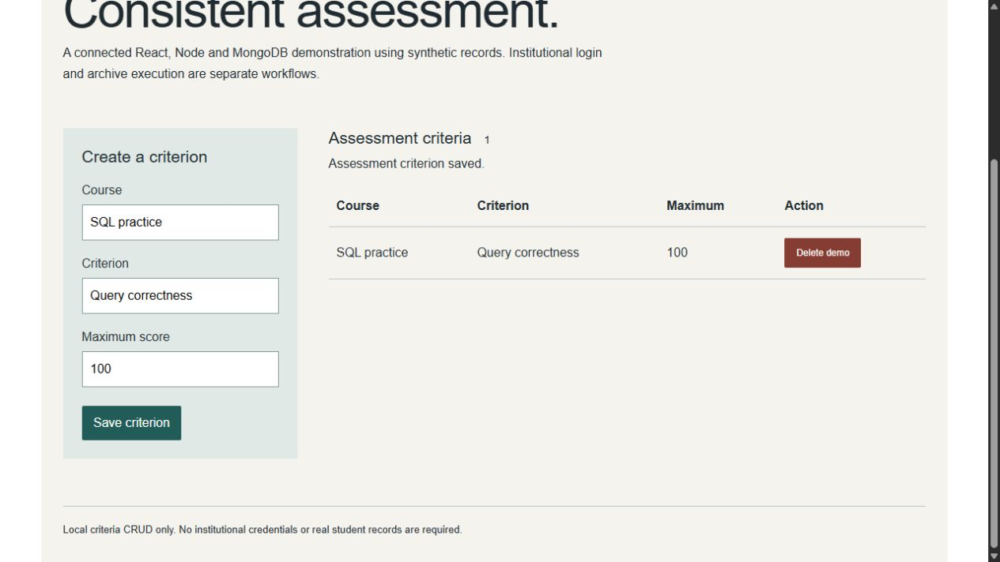

PROJECT DOSSIER / REACT / NODE / MONGODB
CorrectionApp.
Course correction criteria and score workflows.
The context
A separate assessment helper containing its frontend and backend. The standalone CorrectionApp_backend repository is an earlier subset; it is not Riviu’s .NET service layer.
What I built
Course correction criteria and score workflows.
React production demo build and synthetic MongoDB criteria create/read/delete passed. The demo interface saves and deletes criteria; legacy file-execution endpoints are disabled by default. Institutional authentication and complete correction workflows remain unverified.
A closer look
